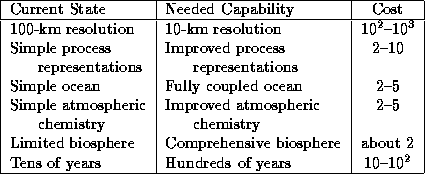
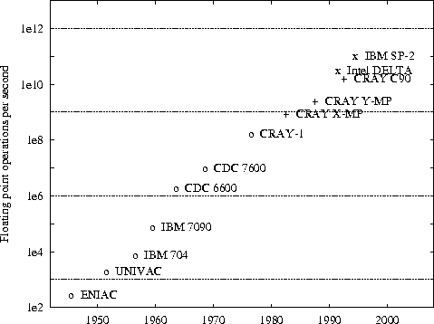
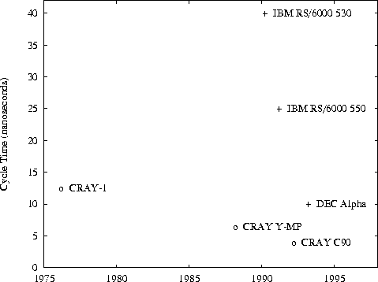
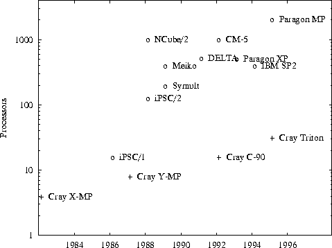

![[DBPP]](pictures//asm_color_tiny.gif)


![[Search]](pictures//search_motif.gif)
A parallel computer is a set of processors that are able to work cooperatively to solve a computational problem. This definition is broad enough to include parallel supercomputers that have hundreds or thousands of processors, networks of workstations, multiple-processor workstations, and embedded systems. Parallel computers are interesting because they offer the potential to concentrate computational resources---whether processors, memory, or I/O bandwidth---on important computational problems.
Parallelism has sometimes been viewed as a rare and exotic subarea of computing, interesting but of little relevance to the average programmer. A study of trends in applications, computer architecture, and networking shows that this view is no longer tenable. Parallelism is becoming ubiquitous, and parallel programming is becoming central to the programming enterprise.
As computers become ever faster, it can be tempting to suppose that they will eventually become ``fast enough'' and that appetite for increased computing power will be sated. However, history suggests that as a particular technology satisfies known applications, new applications will arise that are enabled by that technology and that will demand the development of new technology. As an amusing illustration of this phenomenon, a report prepared for the British government in the late 1940s concluded that Great Britain's computational requirements could be met by two or perhaps three computers. In those days, computers were used primarily for computing ballistics tables. The authors of the report did not consider other applications in science and engineering, let alone the commercial applications that would soon come to dominate computing. Similarly, the initial prospectus for Cray Research predicted a market for ten supercomputers; many hundreds have since been sold.
Traditionally, developments at the high end of computing have been motivated by numerical simulations of complex systems such as weather, climate, mechanical devices, electronic circuits, manufacturing processes, and chemical reactions. However, the most significant forces driving the development of faster computers today are emerging commercial applications that require a computer to be able to process large amounts of data in sophisticated ways. These applications include video conferencing, collaborative work environments, computer-aided diagnosis in medicine, parallel databases used for decision support, and advanced graphics and virtual reality, particularly in the entertainment industry. For example, the integration of parallel computation, high-performance networking, and multimedia technologies is leading to the development of video servers, computers designed to serve hundreds or thousands of simultaneous requests for real-time video. Each video stream can involve both data transfer rates of many megabytes per second and large amounts of processing for encoding and decoding. In graphics, three-dimensional data sets are now approaching volume elements (1024 on a side). At 200 operations per element, a display updated 30 times per second requires a computer capable of 6.4 operations per second.
Although commercial applications may define the architecture of most future parallel computers, traditional scientific applications will remain important users of parallel computing technology. Indeed, as nonlinear effects place limits on the insights offered by purely theoretical investigations and as experimentation becomes more costly or impractical, computational studies of complex systems are becoming ever more important. Computational costs typically increase as the fourth power or more of the ``resolution'' that determines accuracy, so these studies have a seemingly insatiable demand for more computer power. They are also often characterized by large memory and input/output requirements. For example, a ten-year simulation of the earth's climate using a state-of-the-art model may involve floating-point operations---ten days at an execution speed of floating-point operations per second (10 gigaflops). This same simulation can easily generate a hundred gigabytes ( bytes) or more of data. Yet as Table 1.1 shows, scientists can easily imagine refinements to these models that would increase these computational requirements 10,000 times.

Table 1.1: Various refinements proposed to climate models, and
the increased computational requirements associated with these
refinements. Altogether, these refinements could increase
computational requirements by a factor of between and
 .
.
In summary, the need for faster computers is driven by the demands of both data-intensive applications in commerce and computation-intensive applications in science and engineering. Increasingly, the requirements of these fields are merging, as scientific and engineering applications become more data intensive and commercial applications perform more sophisticated computations.
The performance of the fastest computers has grown exponentially from 1945 to the present, averaging a factor of 10 every five years. While the first computers performed a few tens of floating-point operations per second, the parallel computers of the mid-1990s achieve tens of billions of operations per second (Figure 1.1). Similar trends can be observed in the low-end computers of different eras: the calculators, personal computers, and workstations. There is little to suggest that this growth will not continue. However, the computer architectures used to sustain this growth are changing radically---from sequential to parallel.

Figure 1.1: Peak performance of some of the fastest supercomputers,
1945--1995. The exponential growth flattened off somewhat in the
1980s but is accelerating again as massively parallel
supercomputers become available. Here, ``o'' are uniprocessors, ``+''
denotes modestly parallel vector computers with 4--16 processors, and
``x'' denotes massively parallel computers with hundreds or thousands
of processors. Typically, massively parallel computers achieve a
lower proportion of their peak performance on realistic applications
than do vector computers.
The performance of a computer depends directly on the time required to perform a basic operation and the number of these basic operations that can be performed concurrently. The time to perform a basic operation is ultimately limited by the ``clock cycle'' of the processor, that is, the time required to perform the most primitive operation. However, clock cycle times are decreasing slowly and appear to be approaching physical limits such as the speed of light (Figure 1.2). We cannot depend on faster processors to provide increased computational performance.

Figure 1.2: Trends in computer clock cycle times. Conventional vector
supercomputer cycle times (denoted ``o'') have decreased only by a
factor of 3 in sixteen years, from the CRAY-1 (12.5 nanoseconds) to
the C90 (4.0). RISC microprocessors (denoted ``+'') are fast
approaching the same performance. Both architectures appear to be
approaching physical limits.
To circumvent these limitations, the designer may attempt to utilize
internal concurrency in a chip, for example, by operating
simultaneously on all 64 bits of two numbers that are to be
multiplied. However, a fundamental result in Very Large Scale
Integration (VLSI) complexity theory says that this strategy is
expensive. This result states that for certain transitive
computations (in which any output may depend on any input), the chip
area A
and the time T
required to perform this computation
are related so that must exceed some problem-dependent function
of problem size. This result can be explained informally by assuming
that a computation must move a certain amount of information from one
side of a square chip to the other. The amount of information that
can be moved in a time unit is limited by the cross section of the
chip, . This gives a transfer rate of , from
which the  relation is obtained. To decrease the time required
to move the information by a certain factor, the cross section must be
increased by the same factor, and hence the total area must be
increased by the square of that factor.
relation is obtained. To decrease the time required
to move the information by a certain factor, the cross section must be
increased by the same factor, and hence the total area must be
increased by the square of that factor.
This result means that not only is it difficult to build individual components that operate faster, it may not even be desirable to do so. It may be cheaper to use more, slower components. For example, if we have an area of silicon to use in a computer, we can either build components, each of size A and able to perform an operation in time T , or build a single component able to perform the same operation in time T/n . The multicomponent system is potentially n times faster.
Computer designers use a variety of techniques to overcome these limitations on single computer performance, including pipelining (different stages of several instructions execute concurrently) and multiple function units (several multipliers, adders, etc., are controlled by a single instruction stream). Increasingly, designers are incorporating multiple ``computers,'' each with its own processor, memory, and associated interconnection logic. This approach is facilitated by advances in VLSI technology that continue to decrease the number of components required to implement a computer. As the cost of a computer is (very approximately) proportional to the number of components that it contains, increased integration also increases the number of processors that can be included in a computer for a particular cost. The result is continued growth in processor counts (Figure 1.3).

Figure 1.3: Number of processors in massively parallel computers
(``o'') and vector multiprocessors (``+''). In both cases, a steady
increase in processor count is apparent. A similar trend is starting
to occur in workstations, and personal computers can be expected to
follow the same trend.
Another important trend changing the face of computing is an enormous increase in the capabilities of the networks that connect computers. Not long ago, high-speed networks ran at 1.5 Mbits per second; by the end of the 1990s, bandwidths in excess of 1000 Mbits per second will be commonplace. Significant improvements in reliability are also expected. These trends make it feasible to develop applications that use physically distributed resources as if they were part of the same computer. A typical application of this sort may utilize processors on multiple remote computers, access a selection of remote databases, perform rendering on one or more graphics computers, and provide real-time output and control on a workstation.
We emphasize that computing on networked computers (``distributed computing'') is not just a subfield of parallel computing. Distributed computing is deeply concerned with problems such as reliability, security, and heterogeneity that are generally regarded as tangential in parallel computing. (As Leslie Lamport has observed, ``A distributed system is one in which the failure of a computer you didn't even know existed can render your own computer unusable.'') Yet the basic task of developing programs that can run on many computers at once is a parallel computing problem. In this respect, the previously distinct worlds of parallel and distributed computing are converging.
This brief survey of trends in applications, computer architecture, and networking suggests a future in which parallelism pervades not only supercomputers but also workstations, personal computers, and networks. In this future, programs will be required to exploit the multiple processors located inside each computer and the additional processors available across a network. Because most existing algorithms are specialized for a single processor, this situation implies a need for new algorithms and program structures able to perform many operations at once. Concurrency becomes a fundamental requirement for algorithms and programs.
This survey also suggests a second fundamental lesson. It appears likely that processor counts will continue to increase---perhaps, as they do in some environments at present, by doubling each year or two. Hence, software systems can be expected to experience substantial increases in processor count over their lifetime. In this environment, scalability ---resilience to increasing processor counts---is as important as portability for protecting software investments. A program able to use only a fixed number of processors is a bad program, as is a program able to execute on only a single computer. Scalability is a major theme that will be stressed throughout this book.
© Copyright 1995 by Ian Foster